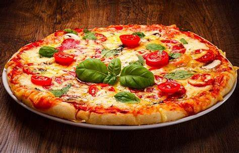
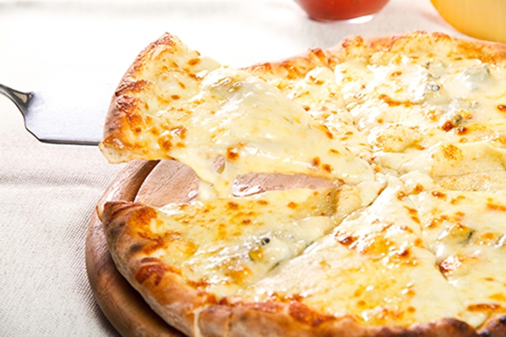
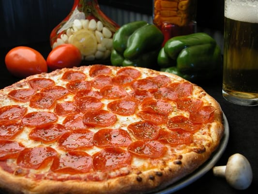
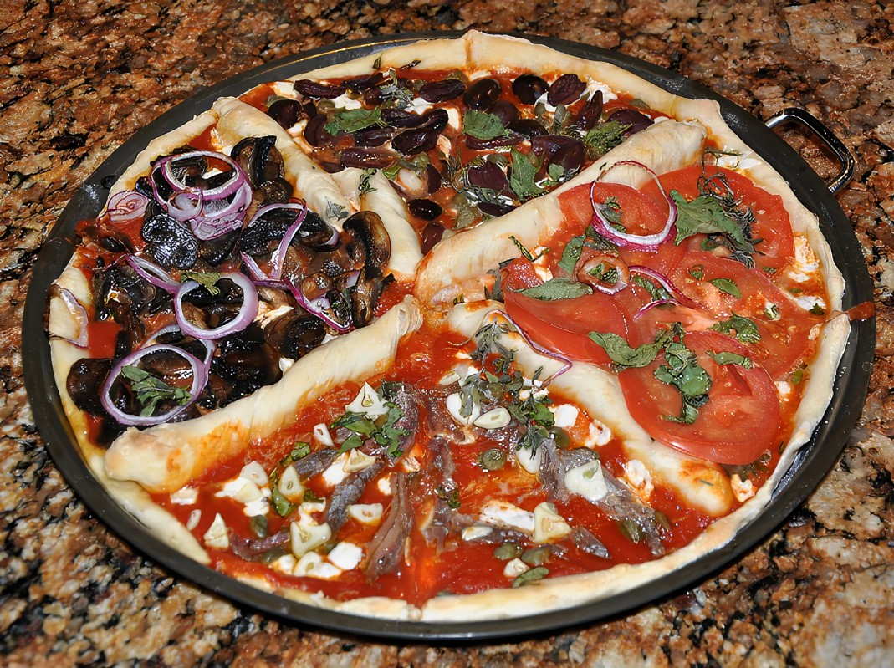
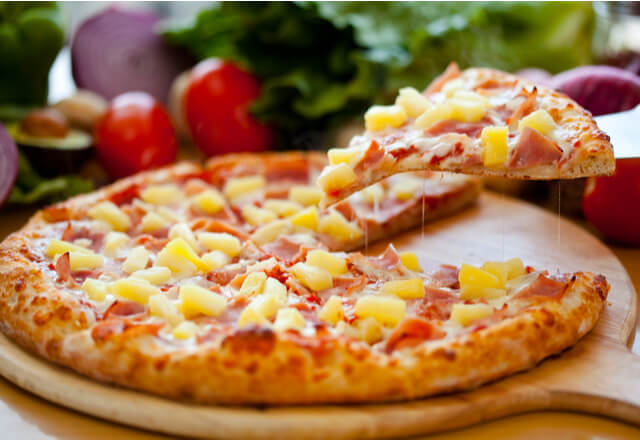

origen italiano es Margheritta, como un homenaje, dice la leyenda, a la reina de Italia a finales del siglo XIX, Margarita de Saboya.
Se compone como su nombre lo dice quesos como lo son el mozzarella,gorgonzola,parmesano y fontina. Sin embargo, también es común encontrar preparaciones con ricota, provolone o queso azul.
De origen estadounidense se le da un toque picante que le entrega el pepperoni, un embutido parecido al salami, se complementa muy bien con el tomate y el queso.
Usan distintos ingredientes que representan las cuatro estaciones. En las preparaciones clásicas se suelen usar alcachofas para representar la primavera, el jamón como símbolo del frío del invierno, las aceitunas por el sol veraniego y los champiñones son el otoño. También se pueden encontrar versiones con mariscos, maíz o pimientos, entre otros.
Tiene como protagonista a los hongos, usualmente champiñones, aunque también es común encontrarla con portobellos. La preparación tradicional incluye únicamente queso y la salsa de jitomates.
El uso de la piña sobre una capa de queso mozzarella y jitomates, acompañada, normalmente, de trozos de jamón, es una combinación bastante interesante, pero que los italianos no soportan.
Receta pizza
Ingredientes:
- 500 gramos de Harina
- 1 cubo de Levadura
- 2 cucharillas Sal
- 3 cucharas Aceite de oliva
- 1 cucharilla Azúcar
- 1 taza Agua templada
Instrucciones
- Hacer la base de la pizza mezclando los ingredientes y amasando hasta formar una bola. Una vez elaborada, dejamos reposar media hora dentro de la nevera y después la estiramos
- Freir la carne condimentada con sal, especias al gusto -y si queremos alguna hierba aromática-, lo justo para que pierda el color de crudo, ya que después se terminará de cocinar en el horno.
- La base de la pizza, extendemos el tomate, cubrimos con la mozarella y la carne picada, procurando que quede bien repartida. Añadimos los discos de pimiento verde y unos trozos de cebolla en juliana y la horneamos a 220º con el horno precalentado.
- Cortar el aguacate por la mitad, sacamos la pulpa y la cortamos transversalmente formando aritos, que después colocamos sobre la pizza llevándola a la mesa inmediatamente.